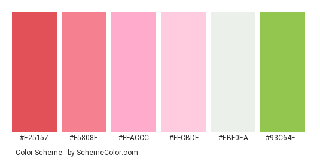

Site Plan
Dry Oar River Rafting
Site Purpose with goals
Our goal is to select the most daring adventurers and provide them with a high-stakes rafting trip.
Target Audience
We invite you to join us at Dry Oar and experience the beauty and relaxation the river affords. That's why we subscribe to the Dry Oar philosophy of boating. Keeping your oars dry for us means taking time to look around and notice the beauty that surrounds the rivers we love.The river experience and the surrounding views will awe you and leave you with wanting more.
Logo

Color Scheme
Typography
Monospace and san-serif for headings,list and paragraphs